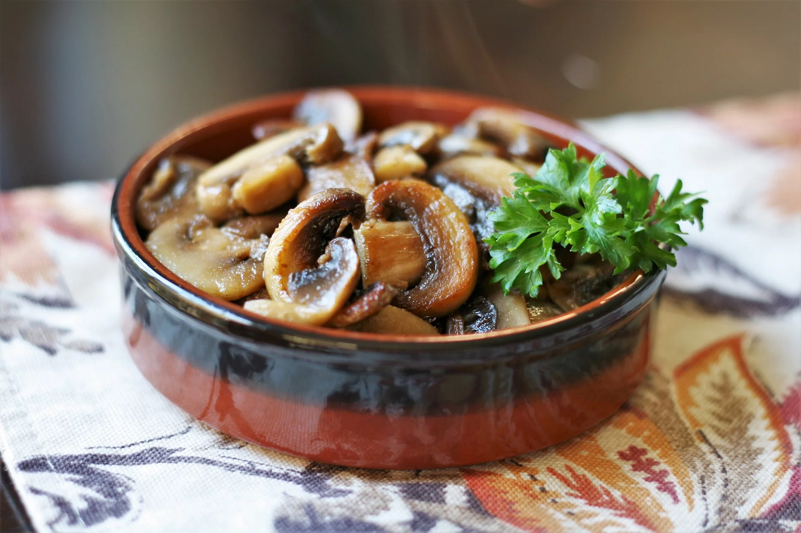

Last Minute Mushroom

Description
This recipe for a buttery, delicious, mushroom side dish couldn't be any simpler.
It goes well with fish fillets, baked chicken, steak, and just about any other main dish.
Ingredients
- 1 tablespoon butter
- 1½ cups fresh button mushrooms, sliced
- ½ teaspoon seasoned salt
Steps
- In a skillet, over medium heat, melt the butter. Add mushrooms, and sprinkle with seasoned salt. Cook, stirring occasionally, until mushrooms soften and become darker in color, about 10 minutes.